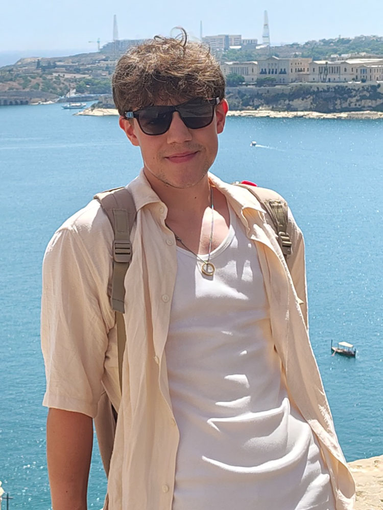

O mnie
Jestem studentem informatyki stosowanej na Uniwersytecie Jagiellońskim i absolwentem technikum informatycznego. Pasjonuję się programowaniem i jestem zorientowany na rozwój w obszarach Game Developmentu oraz Web Developmentu. Moim celem jest tworzenie własnych aplikacji i gier, z dodatkowym naciskiem na doskonalenie umiejętności w projektowaniu interfejsów (UI/UX).
Mateusz Turbański
Zainteresowania
- Fantastyka
- Siłownia
- Gry video
- Spider-man
“All we have to decide is what to do with the time that is given us.” — J.R.R. Tolkien, *The Fellowship of the Ring*
Kontakt:
📞 662 375 610
✉️ kontakt@turbanski.dev
Crafted by Mateusz Turbański ✨